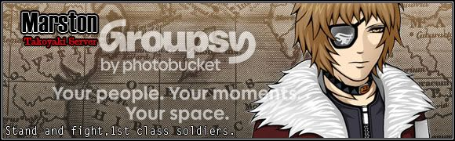

โดย hamtaro » เสาร์ 29 ต.ค. 2011 3:26 pm
โดย hamtaro » เสาร์ 29 ต.ค. 2011 3:26 pm


 โดย robotzaa » เสาร์ 29 ต.ค. 2011 4:37 pm
โดย robotzaa » เสาร์ 29 ต.ค. 2011 4:37 pm


 โดย Raevaan » เสาร์ 29 ต.ค. 2011 8:23 pm
โดย Raevaan » เสาร์ 29 ต.ค. 2011 8:23 pm


 โดย xiahjunsu » เสาร์ 29 ต.ค. 2011 8:35 pm
โดย xiahjunsu » เสาร์ 29 ต.ค. 2011 8:35 pm

 โดย Raevaan » เสาร์ 29 ต.ค. 2011 9:13 pm
โดย Raevaan » เสาร์ 29 ต.ค. 2011 9:13 pm
 โดย xiahjunsu » เสาร์ 29 ต.ค. 2011 9:31 pm
โดย xiahjunsu » เสาร์ 29 ต.ค. 2011 9:31 pm
Raevaan เขียน:เซิฟนี้มีOD warรึเปล่าอะ
 โดย Santacruz » เสาร์ 29 ต.ค. 2011 11:11 pm
โดย Santacruz » เสาร์ 29 ต.ค. 2011 11:11 pm


 โดย ผีชินจัง » อาทิตย์ 30 ต.ค. 2011 1:16 am
โดย ผีชินจัง » อาทิตย์ 30 ต.ค. 2011 1:16 am


 โดย Narcizza » อาทิตย์ 30 ต.ค. 2011 1:19 am
โดย Narcizza » อาทิตย์ 30 ต.ค. 2011 1:19 am

 โดย ผีชินจัง » อาทิตย์ 30 ต.ค. 2011 1:45 am
โดย ผีชินจัง » อาทิตย์ 30 ต.ค. 2011 1:45 am


 โดย ผีชินจัง » อาทิตย์ 30 ต.ค. 2011 1:55 am
โดย ผีชินจัง » อาทิตย์ 30 ต.ค. 2011 1:55 am


 โดย Narcizza » อาทิตย์ 30 ต.ค. 2011 1:57 am
โดย Narcizza » อาทิตย์ 30 ต.ค. 2011 1:57 am
พอดีเลย ส้มก็เจอปัญหาเห็นรูปไอเทมบางอย่างเป็น ? เดี๋ยวจะลองทำดูเน้อ โดย Jinxy » อาทิตย์ 30 ต.ค. 2011 10:00 am
โดย Jinxy » อาทิตย์ 30 ต.ค. 2011 10:00 am

 โดย Jinxy » อาทิตย์ 30 ต.ค. 2011 10:06 am
โดย Jinxy » อาทิตย์ 30 ต.ค. 2011 10:06 am
ผีชินจัง เขียน:ปัญหานี้เป็นปัญหาแรก ๆ ที่เราเจอกันเลย ( แต่ไม่ต้องกลัว วันนี้เรามีทางออกให้คุณ)
ไปที่ C:\Program Files\GungHo\IND_Saga9\data
มองหาไฟล์ชื่อ xls เมื่อเจอแล้วให้ Back up file สำรองไว้
หรือจะ copy ทั้งเกมไปไว้อีก Drive : ก็ได้ (ทำตามอันนี้ก็ดี มันจำเป็น)
จากนั้นให้นำไฟล์ xls ของ onenet มาวางทับ xlsของอินโด
หรือโหลด File xls ได้จากด้านล่าง
xls อินโดนีเซีย
xls Onenet
เหตุผลที่ต้อง copy xls ของ Indo ไว้เพราะว่า เมื่อเราใช้ xls ของไทยเราจะสามารถพิมพ์ วรรณยุกต์และสระได้
แต่ การแสดงภาพ Item บางอย่างจะเห็นเป็น ? หรือ Scripts บางตัวไม่ตรง
ทำให้เราต้องมีไฟล์เกม 2 ไฟล์ไว้ใช้ให้เหมาะกับสถานการณ์
 โดย hamtaro » อาทิตย์ 30 ต.ค. 2011 11:14 am
โดย hamtaro » อาทิตย์ 30 ต.ค. 2011 11:14 am
กำลังดูบอร์ดนี้: ไม่มีสมาชิก และ บุคคลทั่วไป 3 ท่าน